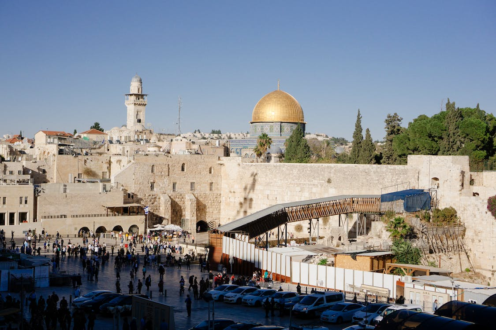

Pontos Turísticos - EuroTour
Pontos Turísticos
Explore alguns dos destinos mais notáveis que aguardam a sua visita:
-
 Jerusalem, a Terra Santa, localizada em Israel. -

Passeio pelas piramides de Gize. -

Edifício White High Raise em Veneza na Italia.
Estes são apenas alguns exemplos. Descubra a riqueza cultural e a beleza de mais destinos incríveis durante a sua viagem com a EuroTour.